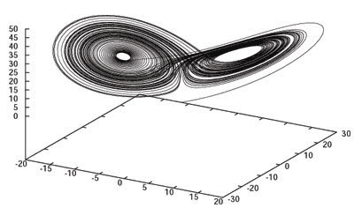
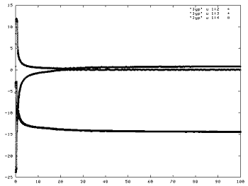

The Lorentz attractor and Lyapunov exponent
|
The Lorentz system is a classical chaotic system. The measure of chaos can be
determined from Lyapunov exponents. These measure the deviation in tragectory
if the tragectory moves 'dy' away from the current 'y.' To meausre this accuratley,
the Jacobian is needed again, except this time not for the integration, and we
need to integrate and extra set of equations...
K'(y,t)=df(y,t)/dy*K(y,t)
here K is a matrix that spans each direction in the Function space...to integrate
them along with the normal tragectory, we need to flatten them into the Vector<..>
format. All of these little things are taken care of by the 'Lorentz' class
This uses the "Lyapunov" class (described later)...for now just assume it is a
little black box that spits out the exponents..
This is the data generated from the below code

The good old standard Lorentz butterfly in its yummy chaotic-ness

Now We can a sneak peak as to the reasons for the butterfiles
shape..
- There is a LARGE negative lyapunov...i.e. One of the 3 'directions'
in the set of equations shrink VERY rapidly in its size (for
every time step the approximate that direction collaps to
a mildly small region of space at ~ Exp(-14)...hits zero real
quick)
- There is a POSTIVE exponent (~1.5)..this means one 'direction'
EXPLODES after each time step ~Exp(1.5) from its last position...this
direction explores almost all of its possible phase space..
- there is a '0' exponent...or a direction that does not change
either up or down...but maintains a steady state.
So the 'flatness' is caused by the large negative exponent...the
chaotic behavior is caused by the positive one...the 'bounded'
solution (i.e. the solution does not explode to infinity or DIE
at zero) is caused by the 0 exponent.
|
#include "blochlib.h"
//need to use the proper namespaces
using namespace BlochLib;
using namespace std;
//Below is the 'function' class for the
//Lortenz Eq...note that our 'function' performs an extra
//step...it calculates the jacobian and assumes that the
//data has enough room to hold the variational equations...
class Lorentz{
public:
rmatrix Jacobi;
double S, R, B;
Lorentz(){
Jacobi.resize(3,3);
S=10; R=28; B=8./3.;
}
void Jacobian(Vector<coord<> > &iny)
{
// Lorentz jacobi
Jacobi(0,0)=-S;
Jacobi(0,1)=S;
Jacobi(0,2)=0;
Jacobi(1,0)=R-iny[0].z();
Jacobi(1,1)=-1;
Jacobi(1,2)=-iny[0].x();
Jacobi(2,0)=iny[0].y();
Jacobi(2,1)=iny[0].x();
Jacobi(2,2)=-B;
}
void function(double t, Vector<coord<> > &iny, Vector<coord<> > &dydt){
dydt[0].x()=S*(iny[0].y()-iny[0].x());
dydt[0].y()=R*iny[0].x()-iny[0].y()-iny[0].x()*iny[0].z();
dydt[0].z()=iny[0].x()*iny[0].y()-B*iny[0].z();
Jacobian(iny);
dydt.put(1, Jacobi*iny(1));
dydt.put(2, Jacobi*iny(2));
dydt.put(3, Jacobi*iny(3));
}
};
//Our Main driver now looks like....
int main(){
Lorentz MyDiffs;
Vector<coord<> > IC(4, 1),start(4, 0);
//set the variational bits to the
//identity matrix to begin with
start[1].x()=1;
start[2].y()=1;
start[3].z()=1;
//time info
double tstep=.01;
double startT=0.;
double endT=100.;
double subst=tstep/10;
int nsteps=int((endT-startT)/tstep)+1;
bs<Lorentz, coord<> > odes(IC,MyDiffs);
//output data...
string fname="data";
ofstream oo(fname.c_str());
ofstream lyo("lyp");
Vector<coord<> > *out=odes.get_out();
//some inital condition
start[0].x()=10;
start[0].y()=5;
start[0].z()=6;
//A Lyapunov object (there is only 1 coord<> we care about)
Lyapunov<coord<> > myLyps(1, out);
double tmS=startT;
IC=start;
odes.setInitialCondition(IC);
while(tmS<endT)
{
odes.odeint(tmS, tmS+tstep);
oo<<(*out)(0)<<endl;
myLyps.CalcLyapunov(tmS, tstep);
lyo<<myLyps;
tmS+=tstep;
}
oo.close();
printTime();
}
|